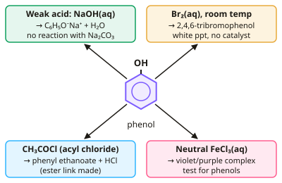

A-level Chemistry Year 13 · Topic 6
Further organic chemistry for OCR and Edexcel
Further organic chemistry covers some of the most important reactions in the OCR and Edexcel courses.
We will look at phenols and why they are more reactive than benzene, how substituents direct electrophilic substitution, and how diazonium salts make azo dyes.
Then we use the iodoform test and finish by combining mass spectrometry, infrared and NMR data to work out the structure of an unknown compound.
- 6 subtopics
- 216 questions
- Free: 6.1 notes and 10 questions
In this topic
- 6.1Phenols: acidity, reactions with bromine, bases and acyl chlorides, and the iron(III) chloride testFree below · 51 questions
- 6.2Directing effects of substituents in electrophilic substitution of benzene derivativesOpen in Full Marks · 34 questions
- 6.3Diazonium salts and azo dyes: diazotisation and couplingOpen in Full Marks · 36 questions
- 6.4The iodoform (triiodomethane) test for CH3CO– and CH3CH(OH)– groupsOpen in Full Marks · 36 questions
- 6.5Combined structure determination using mass spectrometry, IR, 13C and 1H NMR dataOpen in Full Marks · 39 questions
- 6.6Carbon–carbon bond formation: nitriles, Friedel–Crafts reactions and Grignard reagentsOpen in Full Marks · 20 questions
6.1 · Free notes
Phenols: acidity, reactions with bromine, bases and acyl chlorides, and the iron(III) chloride test

Key points
- Phenols have an –OH group bonded directly to a benzene ring (e.g. C₆H₅OH). One of the oxygen lone pairs is delocalised into the ring, and this explains most of their properties.
- Phenol is a weak acid (Ka ≈ 1.3 × 10⁻¹⁰ mol dm⁻³, pKa ≈ 9.9). It is more acidic than alcohols (pKa ≈ 16) but far weaker than carboxylic acids (pKa ≈ 4–5).
- Phenol is more acidic than ethanol because the negative charge on the phenoxide ion (C₆H₅O⁻) is delocalised into the ring, which stabilises the ion. In an alkoxide the charge stays on oxygen and is pushed further by the electron-donating alkyl group.
- Phenol reacts with NaOH(aq) in acid–base neutralisation: C₆H₅OH + NaOH → C₆H₅O⁻Na⁺ + H₂O. Ethanol does not do this. Phenol also reacts with sodium: 2C₆H₅OH + 2Na → 2C₆H₅O⁻Na⁺ + H₂.
- Phenol is a weaker acid than carbonic acid, so it does not react with Na₂CO₃ or NaHCO₃ and gives no CO₂ effervescence. Carboxylic acids do effervesce, so this distinguishes phenol from a carboxylic acid.
- Phenol decolourises bromine water at room temperature with no catalyst. It forms a white precipitate of 2,4,6-tribromophenol: C₆H₅OH + 3Br₂ → C₆H₂Br₃OH + 3HBr. Benzene needs Br₂ with a halogen carrier (FeBr₃) and gives only monosubstitution.
- Phenol is more reactive than benzene because the O lone pair increases the electron density of the ring. This polarises Br₂ more strongly, so the ring is more susceptible to electrophilic substitution. Substitution is directed to the 2, 4 and 6 positions.
- Phenol is nitrated by dilute HNO₃ at room temperature, giving a mixture of 2-nitrophenol and 4-nitrophenol. Benzene needs concentrated HNO₃/H₂SO₄ at about 50 °C.
- Phenol does not form esters directly with carboxylic acids because it is a poor nucleophile. It reacts with acyl chlorides (or acid anhydrides) to give phenyl esters: C₆H₅OH + CH₃COCl → CH₃COOC₆H₅ (phenyl ethanoate) + HCl.
- The iron(III) chloride test: add a few drops of neutral FeCl₃(aq) to the sample. A violet/purple colouration (a complex of Fe³⁺ with phenol) shows a phenol. Alcohols and most other compounds give no such colour.
- Distinguishing tests for exam answers: phenol vs ethanol uses FeCl₃ (violet), Br₂(aq) (white ppt) or NaOH(aq). Phenol vs a carboxylic acid uses Na₂CO₃/NaHCO₃, where only the acid gives CO₂.
In more detail
- Bromination equation: C₆H₅OH + 3Br₂ → C₆H₂Br₃OH + 3HBr; the product, 2,4,6-tribromophenol, is a white precipitate with an antiseptic smell.
- Acid strength order: carboxylic acids > carbonic acid > phenol > water > ethanol. So phenol reacts with NaOH but not with NaHCO₃, which distinguishes it from carboxylic acids.
- Making phenyl esters: use an acyl chloride or acid anhydride, e.g. phenol + ethanoyl chloride → phenyl ethanoate + HCl.
- Uses of phenols: antiseptics (TCP), resins, and as starting materials for aspirin and some polymers.
Practice
Phenols: acidity, reactions with bromine, bases and acyl chlorides, and the iron(III) chloride test: 10 questions
Pick an answer to check it, or open the answer for the explanation.
1. Neutral iron(III) chloride solution is added to aqueous phenol. What is observed?
- Violet/purple colouration
- Orange precipitate
- White precipitate
- Effervescence of CO₂
Show answer
A: Violet/purple colouration. Phenols form a coloured complex with Fe³⁺; violet/purple is the positive test. Alcohols such as ethanol give no colour change.
2. Which reaction occurs with phenol but NOT with ethanol?
- With NaOH(aq) to form a salt and water
- With sodium metal to give hydrogen
- With PCl₅ to give steamy fumes
- With ethanoyl chloride to form an ester
Show answer
A: With NaOH(aq) to form a salt and water. Phenol is acidic enough to be deprotonated by NaOH(aq) giving sodium phenoxide. Ethanol is too weak an acid. Ethanol does react with Na, acyl chlorides and PCl₅.
3. Phenol is added to aqueous sodium carbonate and no gas forms. Which statement explains this?
- Phenol is a stronger acid than carbonic acid
- Carbonate ions cannot accept protons
- Phenol is a weaker acid than carbonic acid
- Phenol is insoluble in all aqueous solutions
Show answer
C: Phenol is a weaker acid than carbonic acid. Carbonic acid (pKa ≈ 6.4) is stronger than phenol (pKa ≈ 10), so phenol cannot protonate carbonate to release CO₂. Carboxylic acids are stronger and do.
4. Why is phenol a stronger acid than ethanol?
- Phenol hydrogen bonds more strongly with water
- The phenoxide ion's charge is delocalised into the ring
- Phenol has a higher relative molecular mass
- The O–H bond is weaker because of the ring's +I effect
Show answer
B: The phenoxide ion's charge is delocalised into the ring. The O lone pair/negative charge in the phenoxide ion overlaps with the ring π system, stabilising the anion and favouring dissociation. Ethoxide cannot delocalise.
5. 4.70 g of phenol (Mr 94.0) gives 9.92 g of 2,4,6-tribromophenol (Mr 330.7) with excess bromine water. What is the percentage yield?
- 20.0%
- 33.3%
- 75.0%
- 60.0%
Show answer
D: 60.0%. n(phenol) = 4.70/94.0 = 0.0500 mol; 1:1 ratio gives 0.0500 × 330.7 = 16.5 g theoretical. Yield = 9.92/16.5 × 100 = 60.0%.
6. Phenol reacts with ethanoyl chloride. Which organic product forms?
- Ethyl benzoate
- Phenylethanone
- Phenyl ethanoate
- Ethanoic acid
Show answer
C: Phenyl ethanoate. The phenol O–H is acylated, giving the ester CH₃COOC₆H₅ (phenyl ethanoate) and HCl. Phenylethanone would be a ketone from Friedel–Crafts acylation.
7. Why does phenol react with bromine water without a halogen carrier, but benzene does not?
- The O–H bond polarises Br₂ directly
- Phenol is a stronger acid than benzene
- Phenol has fewer delocalised electrons
- O lone pair delocalises into the ring, raising its electron density
Show answer
D: O lone pair delocalises into the ring, raising its electron density. Delocalising the O lone pair into the ring increases its electron density, so Br₂ is polarised more strongly and attacks without FeBr₃.
8. Ka for phenol is 1.3 × 10⁻¹⁰ mol dm⁻³. What is the pH of 0.10 mol dm⁻³ phenol (assume negligible dissociation)?
- 10.89
- 9.89
- 5.44
- 8.56
Show answer
C: 5.44. [H⁺] = √(Ka × c) = √(1.3 × 10⁻¹¹) = 3.6 × 10⁻⁶ mol dm⁻³, so pH = 5.44. 9.89 is the pKa, not the pH.
9. Which statement about the nitration of phenol is correct?
- It occurs with dilute HNO₃ at room temperature
- It needs concentrated HNO₃ and H₂SO₄ at 100 °C
- It gives mainly 3-nitrophenol
- It requires a halogen carrier such as FeBr₃
Show answer
A: It occurs with dilute HNO₃ at room temperature. The –OH group activates the ring, so dilute HNO₃ at room temperature gives 2-nitrophenol and 4-nitrophenol (2,4-directing).
10. Which compound gives a violet colour with neutral iron(III) chloride?
- Phenylmethanol
- Methoxybenzene
- Benzoic acid
- 4-methylphenol
Show answer
D: 4-methylphenol. Only a compound with –OH directly bonded to the benzene ring (a phenol) gives the violet complex. Phenylmethanol's –OH is on a side chain.
Keep going in Full Marks
Full Marks has 51 questions on Phenols: acidity, reactions with bromine, bases and acyl chlorides, and the iron(III) chloride test (41 more than here), set out in practice levels. You also get notes and 3D models for all 6 subtopics of Further organic chemistry for OCR and Edexcel, plus games, timed exams and past papers.
On your exam board
- AQATopic 3.3.15: Nuclear magnetic resonance spectroscopy
- OCR ATopic 6.1.1: Aromatic compounds, Topic 6.1.2: Carbonyl compounds, Topic 6.2.1: Amines, Topic 6.2.4: Carbon–carbon bond formation, Topic 6.3.2: Spectroscopy
- OCR BTopic PL: Polymers and life, Topic CD: Colour by design
- EdexcelTopic 17: Organic chemistry II, Topic 18: Organic chemistry III, Topic 19: Modern analytical techniques II
- CambridgeTopic 30: Hydrocarbons, Topic 32: Hydroxy compounds, Topic 33: Carboxylic acids and derivatives, Topic 34: Nitrogen compounds, Topic 37: Analytical techniques